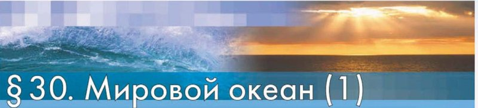
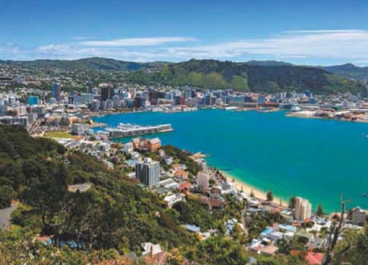

Мировой океан (1)
Амина, это тема про всю воду Земли сразу: про четыре океана и про то, что получается там, где вода встречается с сушей.
Представь, что ты вышла на берег и смотришь на воду. Видно её до самого горизонта, и кажется, что она тут и заканчивается. Но это только кажется.
А теперь представь, что ты поднялась так высоко, что видишь всю Землю целиком, как глобус. Сверху Земля почти не похожа на землю: воды на ней гораздо больше, чем суши. И эта вода не разлита отдельными лужами — она вся соединена в одно огромное целое.
Это целое и называется Мировой океан. Он такой большой, что говорить о нём сразу неудобно, поэтому люди мысленно разделили его на четыре части — четыре океана. Границы между ними придумали сами: в воде никаких линий нет.
А у берегов материков у Мирового океана есть как бы «закоулки»: вода заходит в сушу — получаются моря и заливы; вода протискивается между двумя кусками суши — получается пролив. Вот четыре части этой темы:

У каждого шага написано, на какой странице учебника искать. Внизу шага есть «Подробнее, как в учебнике»: там всё, что есть на этих страницах, ничего не пропущено. Сначала учи по коротким шагам, а перед уроком открой «подробнее».
Надпись вверху шага подскажет, откуда он: синяя — из учебника, золотая — задание учебника, оранжевая — сверх учебника (пересказ, словарик, игры, самопроверка). В «Содержании» шаги так же разбиты на группы.
Подробнее, как в учебнике · что есть в § 30, с. 101–103
- § 30 «Мировой океан (1)» — параграф из главы «Гидросфера — водная оболочка Земли» (это написано в синей полоске вверху страницы).
- Начинается параграф строкой подтем курсивом: «Что такое Мировой океан. Что мы видим на границах материков и океанов». Это и есть два вопроса-заголовка внутри параграфа.
- На с. 101 — раздел «Что такое Мировой океан?», три врезки на полях (про гидросферу, про ноль метров и про площади океанов) и розовая полоса с выводом.
- На с. 102 — раздел «Что мы видим на границах материков и океанов?», врезка со списками внутренних и окраинных морей, фотография «Рис. 72» и розовая полоса с выводом.
- На с. 103 — рубрика «Шаг за шагом. Описываем океан и море по карте» (план из 7 пунктов), рамка «Запомните:» и вопросы в конце параграфа тремя группами: «Это я знаю», «Это я могу», «Это мне интересно».
- Все факты с этих страниц разложены по следующим шагам, каждый со своим блоком «Подробнее, как в учебнике».
Одно огромное вместилище воды
Мировой океан — гигантское вместилище воды на Земле. Проще говоря: это вся вода океанов и морей, взятая вместе.
Его водную поверхность называют акваторией. Акватория Мирового океана — около 361 млн км². Это большая часть всей поверхности Земли: воды на планете больше, чем суши.
Вся вода Земли вместе — это гидросфера, водная оболочка планеты. Так называется и вся глава учебника. Мировой океан — её основная часть.
Мировой океан — основная часть гидросферы, включающая воды океанов и морей.
Четыре части и один Южный
В Мировом океане выделяют четыре крупные части — Тихий, Атлантический, Индийский и Северный Ледовитый океаны. Все они сообщаются между собой: из одного можно доплыть в другой, нигде не выходя на сушу.
Иногда выделяют ещё Южный океан — часть Мирового океана вокруг Антарктиды.
Чётких границ между океанами нет. Линии, которые разделяют их на карте, — условные, то есть придуманные людьми для удобства. Карта океанов есть в Приложении учебника.
Что значит «условные линии»?
Условная линия — это граница, которую договорились считать границей, хотя на самом месте её не видно. Если ты поплывёшь из Индийского океана в Тихий, никакого забора или полоски на воде не будет: вода везде одинаковая. Просто люди договорились, где один океан считать законченным, а другой — начавшимся.
Спокойную поверхность Мирового океана принимают за абсолютную высоту ноль метров.
Поэтому, когда говорят «гора высотой 3000 метров», считают от уровня океана, а не от подножия горы.
МИРОВОЙ ОКЕАН — ОСНОВНАЯ И ЕДИНАЯ ЧАСТЬ ГИДРОСФЕРЫ.
Подробнее, как в учебнике · с. 101
- Заголовок раздела: «Что такое Мировой океан?».
- Мировой океан — гигантское вместилище воды на Земле. Его водная поверхность, или акватория (от греческого слова аква — вода), занимает около 361 млн км² — это большая часть поверхности Земли.
- В Мировом океане выделяют четыре крупные части — Тихий, Атлантический, Индийский и Северный Ледовитый океаны. Все они сообщаются между собой.
- Иногда выделяют Южный океан — часть Мирового океана вокруг Антарктиды.
- Чётких границ между океанами нет (см. карту океанов в Приложении). Линии, разделяющие океаны, являются условными.
- Врезка на полях: Мировой океан — основная часть гидросферы, включающая воды океанов и морей.
- Врезка на полях: спокойную поверхность Мирового океана принимают за абсолютную высоту ноль метров.
- Розовая полоса-вывод: МИРОВОЙ ОКЕАН — ОСНОВНАЯ И ЕДИНАЯ ЧАСТЬ ГИДРОСФЕРЫ.
- В синей полосе вверху страницы — название главы: «Гидросфера — водная оболочка Земли».
- Рассказ о каждом из четырёх океанов и врезка с их площадями — тоже на с. 101, они на следующем шаге.
Четыре океана: у кого какой характер
Открой карту полушарий или атлас — и читай про каждый океан, сразу находя его глазами. Так запомнится гораздо быстрее.
Тихий
Занимает большую часть Западного полушария. На него приходится почти половина площади всего Мирового океана. Он больше по площади, чем вся суша Земли, вместе взятая.
Атлантический
Сильно вытянут с севера на юг. На карте выглядит сжатым длинными побережьями материков: на западе — Северная и Южная Америка, на востоке — Евразия и Африка.
Индийский
Удобно расположился между Африкой, Австралией, Евразией и Антарктидой.
Северный Ледовитый
Почти весь год покрыт льдами. Находится в северной приполярной области, между Северной Америкой и Евразией.
- Тихий — 178,6 млн км²;
- Атлантический — 91,6 млн км²;
- Индийский — 76,2 млн км²;
- Северный Ледовитый — 14,7 млн км².
Как проверить себя по этим числам
Сложи все четыре числа на калькуляторе. Должно получиться примерно столько же, сколько площадь всего Мирового океана, — около 361 млн км². Если получилось — значит, ты ничего не перепутала при переписывании.
Млн км² — миллион квадратных километров. Квадратный километр — это квадрат со стороной 1 км.
Подробнее, как в учебнике · с. 101
- Тихий океан — самый большой и самый глубокий. Вы сразу найдёте его на карте — он занимает большую часть Западного полушария, и на него приходится почти половина площади Мирового океана. Он занимает даже большую площадь, чем вся суша.
- Атлантический океан по площади примерно вдвое меньше Тихого и сильно вытянут с севера на юг. На карте он выглядит сжатым длинными побережьями материков: на западе — побережьями Северной и Южной Америки, на востоке — побережьями Евразии и Африки.
- Индийский океан удобно расположился между Африкой, Австралией, Евразией и Антарктидой и почти целиком оказался в Южном полушарии.
- Северный Ледовитый океан — самый маленький и самый холодный из четырёх. Почти весь год он покрыт льдами. Он располагается в северной приполярной области и занимает пространство между Северной Америкой и Евразией.
- Врезка на полях «Площади океанов»: Тихий — 178,6 млн км²; Атлантический — 91,6 млн км²; Индийский — 76,2 млн км²; Северный Ледовитый — 14,7 млн км².
Моря: вода у самого берега
В пределах океанов выделяют моря, заливы и проливы. Главное их отличие от основной акватории вот в чём: все они занимают пограничное положение — между сушей и открытым океаном.
Посмотри на карту полушарий и приглядись к очертаниям материков. Их побережья очень разные. Где-то линия берега плавная и спокойная — например, на северо-западе Африки. А где-то она причудливо изогнутая, как северное побережье Австралии (карта в учебнике на с. 180—181).
Какие бывают моря
Внутренние
Море заходит далеко внутрь материка, будто суша его обняла. Средиземное, Чёрное, Азовское.
Окраинные
Лежат у края материка. Чаще всего отделены от основной части океана островами. Охотское, Японское.
Есть ещё межостровные моря — те, что лежат среди островов. Пример из учебника: Филиппинское.
Особое географическое положение занимает Саргассово море в Атлантическом океане: у него нет берегов из суши, оно расположено между несколькими течениями.
Из-за близости к суше моря отличаются от открытого океана свойствами вод и глубинами: вода в них бывает теплее или холоднее, солонее или преснее, а глубины обычно меньше.
Внутренние моря: Средиземное, Мраморное, Чёрное, Азовское, Белое, Балтийское, Красное, Жёлтое.
Окраинные моря: Охотское, Японское, Баренцево, Карибское, Карское, Чукотское и др.
Заметь: Каспийского моря в этих списках нет. И это не забывчивость авторов. Каспийское море со всех сторон окружено сушей и никак не соединяется с Мировым океаном, поэтому географы считают его не морем, а озером — самым большим озером на Земле. «Морем» его зовут за огромный размер и за то, что вода в нём солоноватая.
Так что море, на которое ты смотришь из Каспийска, в § 30 не попадает — у него свой, отдельный рассказ.
Подробнее, как в учебнике · с. 102
- Заголовок раздела: «Что мы видим на границах материков и океанов?».
- В пределах океанов выделяют моря, заливы и проливы. Главное их отличие от основной акватории состоит в том, что все они занимают пограничное положение между сушей и открытым океаном.
- Внимательно приглядитесь к очертаниям материков на карте полушарий: их побережья очень различаются на разных участках. Где-то линия берега плавная, спокойная, как, например, на северо-западе Африки, где-то, наоборот, причудливо изогнутая, как северное побережье Австралии (см. с. 180—181).
- Моря могут вдаваться глубоко в сушу — их называют внутренними. Те моря, которые вдаются в сушу незначительно, называют окраинными. Окраинные моря чаще всего отделены от основной части океана островами.
- Из-за своей близости к суше моря отличаются от открытого океана свойствами вод и глубинами.
- Существуют ещё межостровные моря (Филиппинское и др.).
- Особое географическое положение занимает Саргассово море в Атлантическом океане, расположенное между несколькими течениями.
- Врезка на полях. Внутренние моря: Средиземное, Мраморное, Чёрное, Азовское, Белое, Балтийское, Красное, Жёлтое. Окраинные моря: Охотское, Японское, Баренцево, Карибское, Карское, Чукотское и др.
- Про заливы и проливы, фотография «Рис. 72» и розовая полоса-вывод — тоже на с. 102, они на следующем шаге.
Заливы и проливы
Заливы — это части морей или океанов, вдающиеся в сушу. Вода как будто заходит в «карман» берега.
Самые большие заливы: Бенгальский, Мексиканский, Большой Австралийский, Гудзонов, Гвинейский, Аденский, Персидский, Бискайский.
На берегу Финского залива стоит Санкт-Петербург, а на берегу залива Петра Великого — Владивосток. Многие большие города выросли именно у заливов: там кораблям спокойнее, чем в открытом океане.

Проливы — узкие вытянутые участки водной поверхности. У пролива сразу две работы: он соединяет две акватории и разделяет участки суши.
Ещё два пролива-рекордсмена из учебника:
- Мозамбикский — самый длинный пролив в мире. Отделяет остров Мадагаскар от Африки.
- Дрейка — самый широкий. Разделяет Антарктический полуостров и архипелаг Огненная Земля.
Как не перепутать залив и пролив
Задай себе один вопрос: что эта вода делает с сушей?
Залив в сушу заходит и там заканчивается — это тупик, дальше берег. А пролив сушу проходит насквозь: с одной его стороны одна вода, с другой — другая, и между ними можно проплыть. Само слово подсказывает: про-лив, вода «проливается» из одного места в другое.
Архипелаг — группа островов, которые лежат рядом.
МОРЯ И ЗАЛИВЫ — ЭТО ЧАСТИ МИРОВОГО ОКЕАНА, ВДАЮЩИЕСЯ В СУШУ (ИЛИ ПРИЛЕГАЮЩИЕ К НЕЙ).
Подробнее, как в учебнике · с. 102
- Заливы — это части морей или океанов, вдающиеся в сушу (рис. 72).
- Самые большие заливы — Бенгальский, Мексиканский, Большой Австралийский, Гудзонов, Гвинейский, Аденский, Персидский, Бискайский.
- На берегу Финского залива стоит Санкт-Петербург, а на берегу залива Петра Великого — Владивосток.
- Рис. 72. Подпись: «На берегу залива стоит Веллингтон — столица Новой Зеландии».
- Проливы — узкие вытянутые участки водной поверхности, соединяющие две акватории и разделяющие участки суши.
- Гибралтарский пролив соединяет Средиземное море с Атлантическим океаном и разделяет материки Африка и Евразия.
- Татарский пролив (самый длинный в России) отделяет остров Сахалин от Евразии.
- Магелланов пролив соединяет Атлантический и Тихий океаны и отделяет остров Огненная Земля от материка Южная Америка.
- Берингов пролив соединяет Северный Ледовитый и Тихий океаны и разделяет материки Евразия и Северная Америка.
- Самый длинный пролив в мире — Мозамбикский, отделяющий остров Мадагаскар от Африки.
- Самый широкий — пролив Дрейка, разделяющий Антарктический полуостров и архипелаг Огненная Земля.
- Розовая полоса-вывод: МОРЯ И ЗАЛИВЫ — ЭТО ЧАСТИ МИРОВОГО ОКЕАНА, ВДАЮЩИЕСЯ В СУШУ (ИЛИ ПРИЛЕГАЮЩИЕ К НЕЙ).
Описываем океан и море по карте
Это памятка из учебника. По ней можно рассказать про любой океан или море так, чтобы ничего не забыть. Открой атлас, выбери океан или море — и иди по пунктам сверху вниз. Описывать за тебя мы не будем: весь смысл в том, чтобы ты сама поискала по карте.
Найдём океан на карте и определим, в каком полушарии и между какими материками он находится. Для моря определим океан, к которому оно относится.
Используя текст учебника, определим площадь океана.
Площади всех четырёх океанов есть на с. 101 и на шаге 3.
Используя шкалу глубин в атласе, определим максимальную глубину.
Шкала глубин — цветная полоска сбоку карты: чем темнее синий, тем глубже. Самые большие глубины на картах ещё подписывают числом.
Определим, в какой части океана находится море.
Ответ бывает такой: «в северо-западной части», «на востоке океана».
Определим, берега каких материков и крупных стран омывает. Используем и физическую, и политическую карты.
Материки видно на физической карте, страны — на политической, где каждая страна своего цвета.
Укажем важнейшие заливы, проливы.
Определим виды хозяйственной деятельности людей, связанной с океаном или морем, используя учебник, справочники и консультации с учителем.
Хозяйственная деятельность — то, чем люди зарабатывают и что добывают: рыболовство, перевозка грузов кораблями, добыча нефти со дна, отдых на побережье.
Мировой океан. Тихий океан. Атлантический океан. Индийский океан. Северный Ледовитый океан. Южный океан. Моря. Заливы. Проливы.
Это слова, которые нужно знать после § 30. Все они есть в словарике на шагах 7 и 8.
Подробнее, как в учебнике · с. 103
- Рубрика «Шаг за шагом. Описываем океан и море по карте», план из семи пунктов: 1. Найдём океан на карте и определим, в каком полушарии и между какими материками он находится. Для моря определим океан, к которому оно относится. 2. Используя текст учебника, определим площадь океана. 3. Используя шкалу глубин в атласе, определим максимальную глубину. 4. Определим, в какой части океана находится море. 5. Определим, берега каких материков и крупных стран омывает. Используем и физическую, и политическую карты. 6. Укажем важнейшие заливы, проливы. 7. Определим виды хозяйственной деятельности людей, связанной с океаном или морем, используя учебник, справочники и консультации с учителем.
- Рамка «Запомните:» — Мировой океан. Тихий океан. Атлантический океан. Индийский океан. Северный Ледовитый океан. Южный океан. Моря. Заливы. Проливы.
- Вопросы и задания в конце параграфа (тоже с. 103) — на шаге 13.
Словарик: океан и его части
ИграНажми на карточку, и она перевернётся. Словарик из двух частей, открой все карточки.
Словарик: моря, заливы, проливы
ИграВторая часть: всё, что происходит там, где океан встречается с сушей.
Название и разгадка
ИграНажми на название слева, потом на его разгадку справа.
Море, залив или пролив?
ИграНа карточке одно название из параграфа. Выбери, что это: море, залив или пролив.
Найди лишнее
ИграТри из одной компании, одно чужое. Найди чужое.
Проверь себя
Вопросы из учебника
Вопросы разбиты на три группы, как в твоём учебнике, и номера такие же. Рядом с каждым написано, на каком шаге искать ответ. Отвечай своими словами: так лучше запоминается, и учитель услышит, что ты поняла, а не заучила.
Это я знаю
Что называется морем, заливом, проливом?
Подсказка: три определения есть в тексте шагов 4 и 5. Для каждого назови два признака: где оно находится и что делает с сушей. Полностью этот вопрос разобран на последнем шаге.
Шаг 4 · Моря Шаг 5 · Заливы и проливыПо площади больше океан: а) Атлантический, чем Тихий; б) Атлантический, чем Индийский; в) Северный Ледовитый, чем Индийский.
Подсказка: здесь надо проверить каждое из трёх утверждений отдельно. Выпиши четыре площади из врезки (шаг 3) и для каждой пары просто сравни числа: какое больше?
Шаг 3 · Четыре океанаОкраинным морем является: а) Чёрное; б) Баренцево; в) Красное; г) Средиземное.
Подсказка: сначала вспомни, чем окраинное море отличается от внутреннего. Потом найди эти четыре названия в списках из врезки на шаге 4 — три из них будут в одном списке, а одно в другом.
Шаг 4 · МоряЭто я могу
Используя текст параграфа, составьте круговую диаграмму «Площади океанов». Какой вывод вы можете сделать?
Подсказка: числа — во врезке на шаге 3. Круговая диаграмма — это круг, разрезанный на куски, как пирог: чем больше число, тем больше кусок. Сложи все четыре площади — это будет целый круг. Потом прикинь, какую часть круга занимает каждый океан: половину, четверть, совсем узкую полоску. Вывод сделай сама, глядя на готовый рисунок.
Шаг 3 · Четыре океанаНанесите на контурную карту все океаны, моря, заливы, проливы, названия которых выделены в тексте.
Подсказка: сначала составь список. Океаны — на шагах 2 и 3, моря — на шаге 4, заливы и проливы — на шаге 5. Короткий список главных слов есть и в рамке «Запомните» на шаге 6. Потом ищи каждое название в атласе и переноси на контурную карту. Подписывай крупно и разборчиво, названия океанов — вдоль, по всей их длине.
Шаг 2 · Мировой океан Шаг 4 · Моря Шаг 5 · Заливы и проливыЭто мне интересно
Познакомьтесь с литературным описанием Азовского моря. Используя социальные сети, расспросите своих сверстников из Таганрога, Бердянска или Мариуполя об их впечатлениях о море, на берегах которого живут. Подготовьте сообщение об Азовском море.
Отрывок из учебника: «Невелико… Мелко Азовское море, мутны его воды, ибо несут сюда множество ила Дон и Бердянка, Миус и Калмиус, Молочная и Услюка. Печальны азовские песчаные берега: на западе — мёртвая полоса жёлтой Арабатской косы, на юго-востоке — невесёлые холмы да поросшие тальником ерики. Но нигде, пожалуй, художник не встретит таких тонких и нежных красок, как в Азовье… Недвижен ленивый парус далёкого баркаса, и очертания его смутно расплываются, словно кто-то тронул белой акварелью молочно-розовую линию горизонта и задумчиво отвёл кисть. А вокруг моря, куда не кинь глазом, — всё степь да степь. …Покрытые мхом каменные бабы помнят, как над синей азовской степью носились скифские наездники, как по морю, гордо подняв лебединую грудь, плыли генуэзские и венецианские корабли, как на смертную битву за русскую землю шли на половцев Игоревы полки, как два с половиной века тому назад великий Пётр, облюбовав место у пустынного Таганьего Рога, заложил город над морем…» В. А. Закруткин.
Подсказка: сначала разбери отрывок. Ил — мягкий осадок на дне, из-за него вода мутная. Коса — узкая песчаная полоска, уходящая в море. Ерики — маленькие протоки. Баркас — небольшое судно. Каменные бабы — древние каменные статуи в степи. Найди Азовское море в атласе: к какому океану оно относится, какое оно — внутреннее или окраинное, какие реки в него впадают, через какой пролив оно соединяется с Чёрным морем. Про переписку с незнакомыми людьми в соцсетях обязательно поговори с родителями.
Шаг 4 · МоряПодробнее, как в учебнике · с. 103
- Все вопросы с. 103 перечислены выше в том же порядке и с той же нумерацией, что в книге, и разбиты на те же три группы: «Это я знаю» — вопросы 1—3; «Это я могу» — задания 4—5; «Это мне интересно» — задание 6 с отрывком В. А. Закруткина об Азовском море.
Что называется морем, заливом, проливом?
Это первый вопрос в конце параграфа (с. 103) — и самый главный. Если ты ответишь на него уверенно, значит, половину § 30 ты уже знаешь.
Вот четыре «кирпичика» для ответа. Открой их, а потом попробуй рассказать всё сама, не подглядывая.
Мировой океан — основная и единая часть гидросферы: четыре океана сообщаются между собой, а там, где вода встречается с сушей, в нём выделяют моря и заливы, вдающиеся в сушу, и проливы, которые соединяют две акватории и разделяют участки суши.